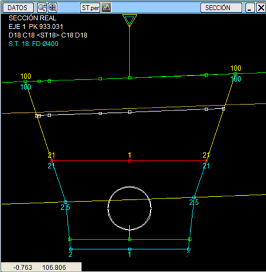
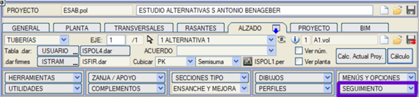
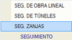
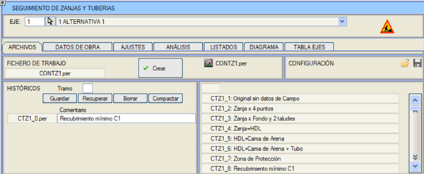
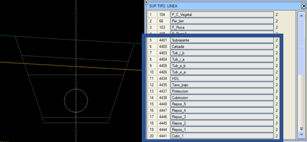
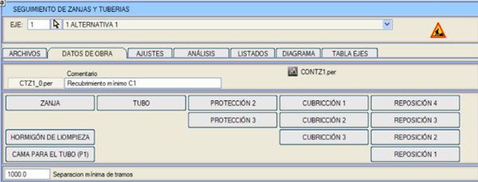
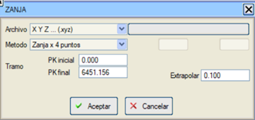
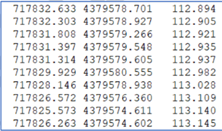
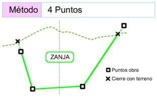

| |
|
Hendek İmalat Takibi
|
Gerçek Hendek Modeli Ön Gereksinimler Genel İşleyiş Temel Modelin Oluşturulması Saha Verileri Hendek Yükleme Yöntemleri Ön Gereksinimler
 ISPOL1.PER (“teorik” tasarım hesaplamalarından oluşturulmuştur) Amaç, doğrusal yapı imalat takibinden farklı olarak, hendeği oluşturan her bir elemanın kısmi “As-Built”lerini oluşturmaktır. Başlangıç için, hendek kazı tabanının saha verisi gereklidir. Tekil noktalar, üçgenlenmemiş. Genel İşleyiş Tasarım tarafından oluşturulan modelden, hendeğin inşa edilmiş halinin oluşturulmasına başlamak için temel olarak enkesitlerin bir “kopyası” oluşturulur. Bu “kopya”, tanımlanan her eksen için bir depo dosyası olarak kaydedilir: CONTZn.per. Kapsayıcı dosya aslında bir kopya değildir. Projenin yüzeylerinin çoğunu, farklı çizgi tiplerine sahip diğer referans yüzeyleriyle (aynı adlarla) değiştirir. Bu süreç, bu yüzeylerin bir referans olarak kalmasını, ancak artık metrajlarda veya BIM'de kullanılmayacağını ima eder. Teorik olarak, bu süreç zaten teorik bir model olarak mevcuttur. Bu kapsayıcı üzerinde, hendeği oluşturan her bir katmanın farklı veri alımları biriktirilecektir. Teorik projede öngörülen katman sayısıyla aynı olmak zorunda değildir. Temel Modelin Oluşturulması Proje hesaplandıktan sonra BOYKESİT / İMALAT TAKİBİ / HENDEK İML.TAKİBİ menüsüne erişin.   Arayüz, doğrusal yapı imalat takibine benzer. Menü, sürecin farklı bölümlerine ayrılmış birkaç bölüme dağıtılmıştır. Başlıkta, üzerinde çalışılacak eksenin seçimini bulacağız. Bu nedenle, BOYKESİT'ten belirli bir eksenden erişmek gerekli değildir. İlk olarak, DOSYALAR sekmesi bulunur. Burada, hendek inşaatının kısmi kopyaları yönetilir ve ayrıca, kapsayıcı dosya olan CONTZn.per oluşturulur.  İlk erişimde, CONTZn.per dosyası mevcut değildir. Oluşturmak için Oluştur düğmesini kullanmak gerekir. Bu işlem, enkesitleri aldığı ISPOLn.per dosyasını arar. Proje çizgilerini referans çizgilerine dönüştüren CONTZn.per dosyası oluşturulur. Menüde çalışma dosyamızın olduğunu kontrol edeceğiz.  Enkesit Düzenleyici içinde, çizgi tipleriyle birlikte CONTZn.per'in görünümü. Çizgi tiplerine dikkat edin; adları tasarım adlarıyla aynı olsa da, çizgi tipi numaraları 4401 ve üzeridir. Saha Verileri Hendeğin ilerlemesini gerçek inşaat boyutlarıyla oluşturmak için, saha verileri kısmi olarak yüklenmelidir. Her malzemenin kendi veri yükleme erişimi olacak ve bu veriler otomatik olarak CONTZn.per kapsayıcısına entegre edilecektir. Not: Orijinal projeyle aynı sayıda malzemeye sahip olmak gerekli değildir. Gerçek hendek oluşumunun temeli olan HENDEK kavramının mevcut olması zorunludur. Bir istisna dışında, eğer sadece BORU modellemesi oluşturulursa. Bu nedenle, kalınlıkları yerleştirmeye başlamak için, önce HENDEK verileriyle başlamak gerekir.  Hendek Hendek verilerini veya başka herhangi bir malzeme türünü dahil etmek için saha noktaları gereklidir. Hendek'te, kazı metrajını oluşturacak olan kazının dış yüzeyi tanımlanır. Ayrıca, hendeğin geri kalan dolguları için bir sınır görevi görecektir. Gerçek saha verileriyle hendek için 67 ve 68 (taban ve duvar) yüzeyleri oluşturulur.  Dosya: Şu anda doğrudan yüklemede şu uzantılara sahip dosyalar buluyoruz: .xyz ve klasik Istram dosyaları (.toc, .top) Geometrinin oluşturulması için yalnızca noktaların XYZ koordinatlarının kullanıldığını unutmayın. Örnek .xyz: Sekmeyle ayrılmış x, y, z koordinatları.  Yükleme Yöntemleri

Hendek tabanından iki nokta ve duvarların iki teorik şevi. Sol şev ve sağ şev olarak ayrılırlar. Doğal zemine kadar yansıtılırlar. Noktaların, koridoru oluşturan aynı enkesitlerde olması gerekmez. Algoritma, en yakın teorik enkesitlere yansıtılmalarını elde etmek için enterpolasyon yapar. Noktaların eksenin uçlarına ulaşmaması durumunda, uç enkesitlerdeki noktayı hesaplamak için kullanılan değer ekstrapolasyon değeridir. Eksene yansıtıldığında eksen dışında kalan noktalar dikkate alınmaz. Metraj yapılırken, sgX.res dosyalarına paralel olarak hesap tabloları için sgX.xslx raporları da oluşturulur. |